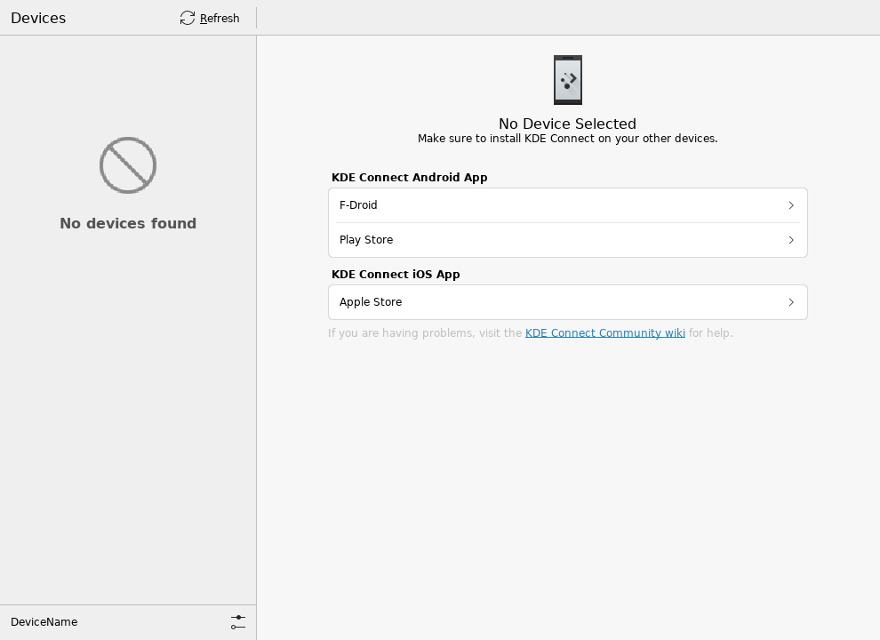

Abra Dispositivos conectados nos dois computadores da mesma rede. Selecione o destinatário e confirme o pedido no outro computador. Depois, use o menu de contexto do arquivo para enviá-lo ou abra Sincronizar pastas para configurar uma pasta compartilhada entre os dispositivos.
Na tela de dispositivos, use Atualizar (Refresh na interface em inglês) se o outro computador ainda não aparecer.
